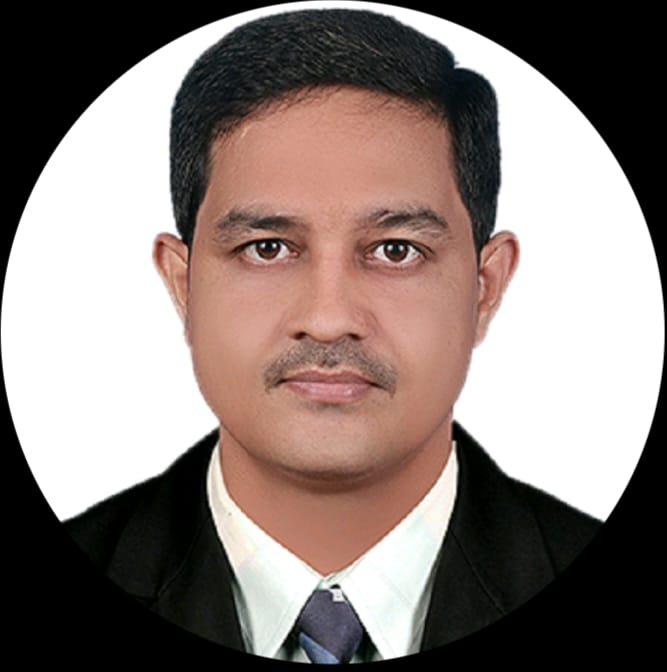
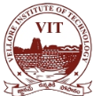
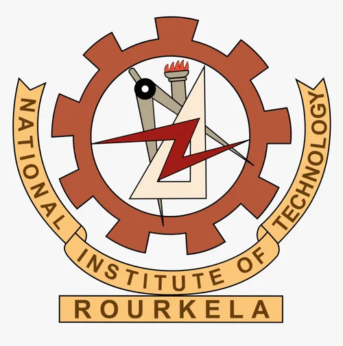

Dr. Vinod kiran kappala
Postdoctoral Researcher at IISc
Phone
Email
vinodkiran@gmail.com
Location
Sundargarh,odisha,india
About Me
Dr. Vinod Kiran Kappala is a dedicated academic and researcher, currently serving as a Postdoctoral Researcher at the prestigious Indian Institute of Science (IISc). With a role as an Assistant Professor at VIT-AP University, he contributes significantly to academia and technological advancements.
As the co-founder of Ewarn System Pvt. Ltd., Dr. Kappala combines his expertise in research and entrepreneurship. He has prior experience as a researcher at NIT-Rourkela and held the position of Director at Ewarn, showcasing his leadership and innovative spirit.
Experience

Postdoctoral Researcher
Indian Institute of Science (IISc) Aug 2024 – Present | Full-time India

Assistant Professor Senior
Vellore Institute of Technology, Andhra Pradesh (VIT-AP University) Aug 2022 – Present | Full-time | 2 yrs 4 mos Vijayawada, Andhra Pradesh, India | On-site

Researcher
NIT-Rourkela August 2024 Conducted research on emerging technologies, contributed to publications.
Director
Ewarn System Private Limited Aug 2020 – Jul 2022 | Part-time | 2 yrs Raurkela, Odisha, India | Remote